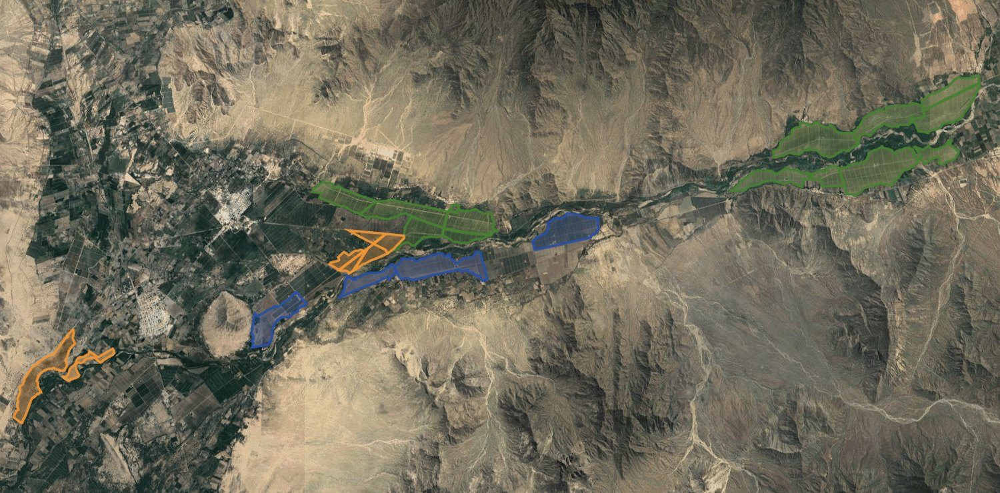

Concept boardThe top of this page is the Overview screen as it would look, with real numbers from the report data. Below it is the plan for every other screen.
Yarabamba
Valle de Zaña · Lambayeque, Peru · 23 lots · 10 fundos · DD preview as of September 2026 · prepared for responsAbility
Coastal El Niño Alert · ENFEN 15-2026
DD PREVIEW SNAPSHOT
The ground scores well. The variable that decides it doesn't show up from orbit.
Crop suitability, thermal structure and a live El Niño risk model, built from the asset KMLs and public climate and soil data. It tells you where to put boots on the ground.
chance this summer is not normal
Dec 2026 – Mar 2027
Dec 2026 – Mar 2027

LOTS23 lots · 10 fundos · avocado up-valley, blueberry & mandarin toward the coast
Report render. In the build, lots are drawn live from the KML in crop colours and are clickable.
Two perils, opposite corners
TRY THE LENSES
Switch Scenario above: flood and heat footprints move with the ENFEN tier. Switch Crop to focus one crop. Every screen in the build reacts to the same two lenses.
CONCEPT · REPORT → APP
33 pages become 8 screens, one map and two lenses
The report repeats itself because paper can't be interactive: suitability ×3 crops, microclimate ×3, risk ×3, and every map printed once per variant. The app turns that repetition into controls.
| The report does this… | …the app does this |
|---|
REAL DATA, NOT MOCKS
Every figure comes from the analysis outputs in Responsability/: the lot KML, 12 WGS84 GeoTIFFs with their colour ramps, 18 CSV series and the report JSON. A small build_data.py turns them into data.js and map overlays. Only the DSCR curve stays illustrative, as in the report.
SCREENS
Each screen opens with its one-sentence finding
SIGNATURE INTERACTIONS
What makes it an app, not a PDF
Two of these run below on the real series, so you can feel them before the build.
Trigger backtest
Stress days ≥ 32 °C per year, 1981–2025 (ERA5-Land over the lots). Drag the threshold: how often would an index trigger have fired?
Trigger: stress days in a year
Illustrative. The build backtests any index and threshold per crop line (32 / 33 / 34 °C) and links it to the DSCR view.
ENFEN outlook, month by month
Niño 1+2 magnitude probabilities, Comunicado Oficial 15-2026 (28 Aug 2026). Peak risk Sep–Jan, fading by autumn 2027.
≥ 62 % extraordinary through January 2027In the build: next communiqué date, and the scenario lens defaults to the most likely tier.
VISUAL DIRECTION
Light by default, imagery-led, same system
Same tokens, components and behaviour as every other dashboard. It opens light like the rest; satellite imagery and heat rasters carry the drama either way, and dark is one click away (try Theme).
Colour roles
Each colour has one job.
Crop identity
AvocadoMandarinBlueberry
Scenario tierModerate · 16 %Strong · 40 %Extraordinary · 43 %
Suitability≥ 8050–79< 50
Validation◆ needs on-site validation
Crop colours are the validated slots 1–3 of the categorical palette, safe side by side on a map. Blueberry is violet rather than the report's blue because blue next to teal fails the colour-blind check.
Map layers keep their scientific ramps
From yarabamba-layers.json, exactly as the analysis renders them. Charts stay on system tokens.
DECISIONS
Three calls before we build
Build order
Showpiece first, then depth.
- Phase 1 · Overview, Valley map, El NiñoData pipeline, lenses in the URL, layer stack with swipe, fundo profile drawer, climate series.
- Phase 2 · Suitability, Heat & frost, ExposureCrop lens screens, law-of-the-minimum bars, band distributions, crop × peril matrix.
- Phase 3 · Underwriting, Next steps, Sources & limitsTrigger backtest linked to DSCR, deliverables board, method drawer. Promote reusable parts into the system.